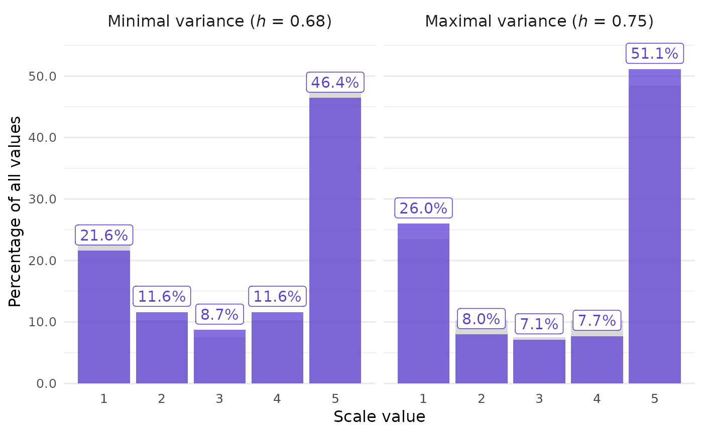
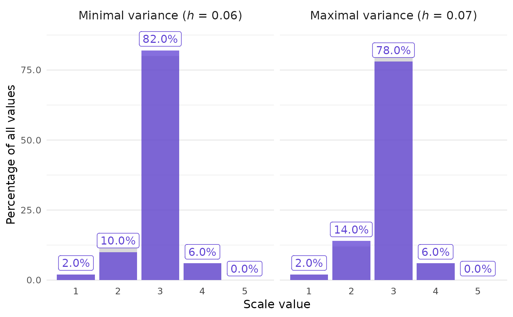

Call closure_generate() to run the CLOSURE algorithm on a
given set of summary statistics.
This can take seconds, minutes, or longer, depending on the input. Wide
variance and large n often lead to many samples, i.e., long runtimes.
These effects interact dynamically. For example, with large n, even very
small increases in sd can greatly increase runtime and number of values
found. Consider specifying path in these cases; see "Writing to disk"
below.
If the inputs are inconsistent, there is no solution. The function will then return empty results and throw a warning.
Usage
closure_generate(
mean,
sd,
n,
scale_min,
scale_max,
items = 1,
path = NULL,
stop_after = NULL,
include = c("stats_and_horns", "stats_only", "all"),
rounding = "up_or_down",
threshold = 5,
ask_to_proceed = TRUE
)Arguments
- mean
String (length 1). Reported mean.
- sd
String (length 1). Reported sample standard deviation.
- n
Numeric (length 1). Reported sample size.
- scale_min, scale_max
Numeric (length 1 each). Minimal and maximal possible values. For example, with a 1-7 Likert scale, use
scale_min = 1andscale_max = 7. Prefer the empirical min and max if available: they constrain the possible values further.- items
Numeric (length 1). Number of items composing the original measurement scale. CLOSURE only supports single-item scales, so this must be
1, the default. For multi-item scales, seesprite_generate().- path
String (length 1). Optionally, choose the directory where a new folder with CLOSURE results should be created. Use
path = "."for your current working directory. See "Writing to disk" below.- stop_after
Numeric (length 1). Optionally, make CLOSURE stop searching after it found this many samples. Useful if the goal is just to check whether the inputs are consistent: e.g., with
stop_after = 1, the function returns either one sample or none. The latter would indicate an inconsistency.- include
String (length 1). If results are written to disk, which parts of them should be included in the R output?
With
"stats_and_horns", the default, all parts except for the samples are included."stats_only"excludes the"results"tibble, i.e., samples and horns."all"reads the full results, including the samples and horns values.
- rounding
String (length 1). Rounding method assumed to have created
meanandsd. See Rounding options, but also the Rounding limitations section below. Default is"up_or_down"which, e.g., unrounds0.12to0.115as a lower bound and0.125as an upper bound.- threshold
Numeric (length 1). Number from which to round up or down, if
roundingis any of"up_or_down","up", and"down". Default is5.- ask_to_proceed
Logical (length 1). If the runtime is predicted to be very long in an interactive setting, should the function prompt you to proceed or abort? Default is
TRUE.
Value
closure_generate() returns a named list of tibbles (data frames):
inputs: Arguments to this function.metrics_main:samples_all: double. Number of all samples. Equal to the number of rows inresults.values_all: double. Number of all individual values found. Equal ton * samples_all.
metrics_horns:mean: double. Average horns value of all samples. The horns index is a measure of dispersion for bounded scales; seehorns().uniform: double. The value thatmeanwould have if all samples were uniformly distributed; seehorns_uniform().sd,cv,mad,min,median,max,range: double. Standard deviation, coefficient of variation, median absolute deviation, minimum, median, maximum, and range of the horns index values across all samples. Note thatmadis not scaled using a constant, asstats::mad()is by default.
frequency:samples: string. Frequencies apply to one of three subsets of samples:"all"for all samples,"horns_min"for those samples with the lowest horns index among all samples, and"horns_max"for those samples with the highest horns index.value: double. Scale values derived fromscale_minandscale_max.f_expected: double. Average count of each scale value across the group's samples.f_representative: double. Count of each scale value in the group's medoid, i.e., the actual sample with the smallest total distance (EMD) to all others.NaNifpathwas specified because the medoid can't be found while streaming results to disk.f_relative: double.f_expecteddivided byn.
modality_counts,modality_pairs,modality_shapes,modality_summary,modality_prominence: the range of counts of each scale value, and the shapes (e.g., one or two modes) that the samples take.modality_conclusion: whether any sample can be unimodal, bimodal, or J-shaped.NAmeans that no such sample was found, but the search was partial, so it might still exist. This is always the case with SPRITE, and with CLOSURE ifstop_afterwas specified.results:id: double. Runs from1tosamples_all.v1,v2, etc. (not present by default ifpathwas specified): integer. One column per scale value, holding the number of times this value occurs in the sample. For instance,v3counts the 3s. Negative values are marked withn, as invn2for -2, and decimal values with_, as inv1_5for 1.5 (only for SPRITE withitems > 1). Together, these columns describe each sample completely because the order of values within a sample doesn't matter. The counts of each row sum up ton.horns: double. Horns index of each sample.
directory(only present ifpathwas specified):path: string. Location of the folder in which the results were saved.
Writing to disk
Specify path if the expected runtime is very
long. (In case you have trouble choosing a path, use path = "." for
your current working directory.) This makes sure the results are preserved
by incrementally writing them to disk. Otherwise, you might encounter an
out-of-memory error because closure_generate() accumulates more data
than your computer can hold in memory.
More about memory
Some output columns that contain counts, such as
f_expected, are doubles instead of integers. This is because doubles are
able to contain much larger numbers. When counting CLOSURE results, it
is possible to exceed the limit of 32-bit integers in R, which is roughly
two billion. For instance, this will happen with values_all in the examples
(data_high) if n is changed to 120 and scale_max to 7.
Rounding limitations
The rounding and threshold arguments are not
fully implemented. For example, CLOSURE currently treats all rounding
bounds as inclusive, even if the rounding value would imply otherwise.
Many specifications of the two arguments will not make any difference,
and those that do will most likely lead to empty results.
Printing
When printing results, you can use print() explicitly
with the show argument to control which elements are shown. Set show to
one of:
"some"(the default): show some elements, hide others. The hidden ones have brief descriptions."all": show all elements."none": show no elements, only their descriptions.
For example: print(your_results, show = "all")
Examples
# High spread often leads to many samples --
# here, 2492.
data_high <- closure_generate(
mean = "3.5",
sd = "1.7",
n = 70,
scale_min = 1,
scale_max = 5
)
#>
#> ✔ All CLOSURE results found
data_high
#>
#> ── CLOSURE results: 2,492 samples ──────────────────────────────────────────────
#>
#> $inputs · how `closure_generate()` produced these data
#> # A tibble: 1 × 8
#> technique mean sd n scale_min scale_max rounding threshold
#> <chr> <chr> <chr> <dbl> <dbl> <dbl> <chr> <dbl>
#> 1 CLOSURE 3.5 1.7 70 1 5 up_or_down 5
#>
#> $metrics_main · key statistics about the generated samples
#> # A tibble: 1 × 2
#> samples_all values_all
#> <dbl> <dbl>
#> 1 2492 174440
#>
#> $metrics_horns · on the distribution of horns index values
#> # A tibble: 1 × 9
#> mean uniform sd cv mad min median max range
#> <dbl> <dbl> <dbl> <dbl> <dbl> <dbl> <dbl> <dbl> <dbl>
#> 1 0.708 0.5 0.0223 0.0314 0.0210 0.676 0.705 0.748 0.0719
#>
#> With hidden elements:
#> ℹ Access $modality_counts for min/max counts per scale value (5 rows)
#> ℹ Access $modality_pairs for frequency ordering between adjacent values (4 rows)
#> ℹ Access $modality_conclusion for flagging modality and J-shape status (1 row); `NA` means not found, but the search was partial
#> ℹ Access $modality_shapes for min/max counts per scale value within each shape class (10 rows)
#> ℹ Access $modality_summary for number of samples in each shape class (1 row)
#> ℹ Access $modality_prominence for shape classes at each mode prominence threshold (18 rows)
#> ℹ Access $frequency for full frequency table (15 rows)
#> ℹ Access $frequency_dist for per-value count distributions (101 rows)
#> ℹ Access $results for count of each scale value in every sample, and horns indices (2,492 rows)
#>
#> # Use `print(show = "all")` to see all elements
#> # Use `print(show = "none")` to hide elements
#>
# Get a clear picture of the distribution
# by following up with `closure_plot_bar()`:
closure_plot_bar(data_high)

# Low spread, only 4 samples, and not all
# scale values are possible.
data_low <- closure_generate(
mean = "2.9",
sd = "0.5",
n = 25,
scale_min = 1,
scale_max = 5
)
#>
#> ✔ All CLOSURE results found
data_low
#>
#> ── CLOSURE results: 4 samples ──────────────────────────────────────────────────
#>
#> $inputs · how `closure_generate()` produced these data
#> # A tibble: 1 × 8
#> technique mean sd n scale_min scale_max rounding threshold
#> <chr> <chr> <chr> <dbl> <dbl> <dbl> <chr> <dbl>
#> 1 CLOSURE 2.9 0.5 25 1 5 up_or_down 5
#>
#> $metrics_main · key statistics about the generated samples
#> # A tibble: 1 × 2
#> samples_all values_all
#> <dbl> <dbl>
#> 1 4 100
#>
#> $metrics_horns · on the distribution of horns index values
#> # A tibble: 1 × 9
#> mean uniform sd cv mad min median max range
#> <dbl> <dbl> <dbl> <dbl> <dbl> <dbl> <dbl> <dbl> <dbl>
#> 1 0.0624 0.5 0.00400 0.0641 0.00400 0.0584 0.0624 0.0664 0.00800
#>
#> With hidden elements:
#> ℹ Access $modality_counts for min/max counts per scale value (5 rows)
#> ℹ Access $modality_pairs for frequency ordering between adjacent values (4 rows)
#> ℹ Access $modality_conclusion for flagging modality and J-shape status (1 row); `NA` means not found, but the search was partial
#> ℹ Access $modality_shapes for min/max counts per scale value within each shape class (5 rows)
#> ℹ Access $modality_summary for number of samples in each shape class (1 row)
#> ℹ Access $modality_prominence for shape classes at each mode prominence threshold (18 rows)
#> ℹ Access $frequency for full frequency table (15 rows)
#> ℹ Access $frequency_dist for per-value count distributions (13 rows)
#> ℹ Access $results for count of each scale value in every sample, and horns indices (4 rows)
#>
#> # Use `print(show = "all")` to see all elements
#> # Use `print(show = "none")` to hide elements
#>
# This can also be shown by `closure_plot_bar()`:
closure_plot_bar(data_low)
